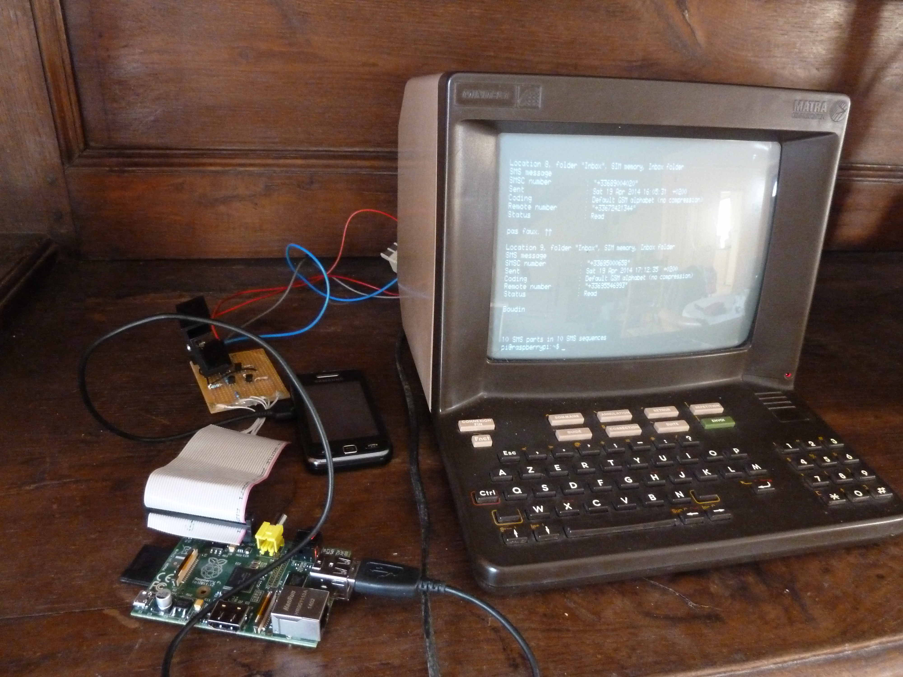
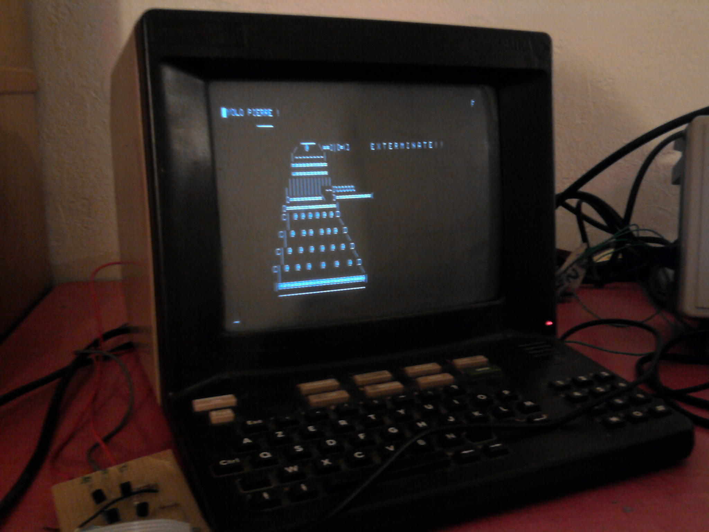
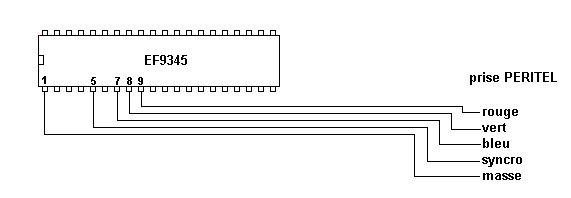

Terminal UNIX
Transformation d'un minitel en terminal UNIX en le reliant au Raspberry Pi grâce à une liaison UART (création d'une petite carte pour adapter les tensions entre le minitel et le Raspberry qui fonctionne en 3V3). Malheureusement il ne gère pas les couleurs mais c'est suffisant pour faire une partie d'Aventure, surfer sur le web avec le navigateur Elinks ou jouer à 2048. On peut même envoyer des SMS avec un téléphone portable relié au Raspberry en USB et le logiciel Gammu.
 liens utiles au projet:
- Que faire d’un vieux Minitel ?
- 3615 Cloud à la Devoxx
- Un minitel comme terminal linux USB. Partie 1 : Hardware
- Un minitel comme terminal linux USB. Partie 2 : Software Raspberry Pi
- Minitel sur Raspberry Pi +furretek
- Recycler un ancien Minitel par cfp-radio
- Super Minitel Entertainment System par Virtualabs.fr
- Recyclage d'un MINITEL 9 en moniteur B/W par jla.1313
- Le Minitel, que peut on faire de ce cube!?
Moniteur TV
Avec un deuxième minitel j'ai essayé de transmettre une image en nuance de gris avec les composantes RGB et une synchro verticale.
Une prise péritel a donc été utilisé pour le relier à la source.
Ci-dessous un premier exemple d'utilisation evec un décodeur.
schéma du brochage sur le composant gérant l'affichage sur le minitel (documentation de l'EF9345)

liens d'autres projets similaires:
A noter que ces projets utilisent une autre méthode qui consiste à supprimer la carte modem du minitel et à la remplacer
par un montage prenant une entrée vidéo composite et comprenant un séparateur de synchro (un LM1881).
Disclamer:
Attenton le minitel contient un bloc THT (Très Haute Tension). Celui-ci délivre jusqu'à plusieurs dizaines de Kilovolts en fonctionnement. De plus il reste chargé longtemps après la mise hors tension du minitel.
Ne pas s'amuser à démonter un minitel ou tout autre écran cathodique sans avoir pris des précautions et sans avoir un minimum de connaissances sur les risques encourus.